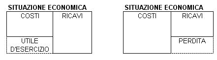
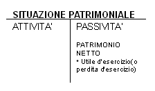
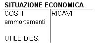
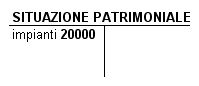
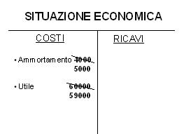
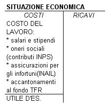
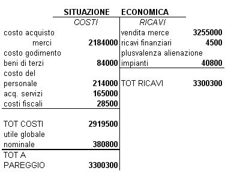
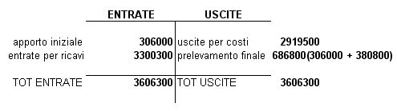

Torna alla pagina di Economia ed Organizzazione Aziendale
:: Economia ed Organizzazione Aziendale ::
Lezione 31/03/2008
Reddito d'Esercizio
Una volta completati i 2 prospetti situazione patrimoniale e situazione economica (sono prospetti intermedi, una sintesi della contabilità. Il bilancio(con SP e CE) è successivo e più dettagliato) calcoliamo nella situazione economica il reddito d'esercizio.
Si ottiene per differenza:
RICAVI - COSTI = REDDITO D'ESERCIZIO
se RICAVI > COSTI → RICAVI - COSTI = UTILE D'ESERCIZIO(parte che manca ai costi per eguagliare i ricavi)
se RICAVI < COSTI → RICAVI - COSTI = PERDITA D'ESERCIZIO(parte che manca ai ricavi per eguagliare i costi)


Il patrimonio netto si articola in parti ideali:
- capitale sociale
- riserva obbligatoria
- altre riserve
- utile d'esercizio(o perdita)
- utile d'esercizio non distribuito ai soci
⇒ le riserve e gli utili non distribuiti rappresentano AUTOFINANZIAMENTO PROPRIO, mentre AUTOFINANZIAMENTO IMPROPRIO è rappresentato dagli ammortamenti.

Tanto più è alto l'ammortamento, tanto è più basso l'utile d'esercizio.
Esempio
Impianto con costo storico: 20000.

L'impianto è a disposizione del processo produttivo per 5 anni. Il costo di competenza di ogni anno(esercizio amministrativo) è pari a: 20000(costo storico) / 5(anni) = 4000
Ipotesi: utile d'esercizio a 60.000

⇒ gli ammortamenti rappresentano una forma di autofinanziamento.
Equilibrio Economico
Abbiamo detto che il reddito può essere UTILE(se R>C) oppure PERDITA(se R<C), quindi si può parlare di EQUILIBRIO ECONOMICO a condizione che:
- tutti i costi sono coperti dai ricavi
- sono remunerati tutti i portatori di interessi istituzionali:
- lavoro(personale dipendente)
- portatori di capitale(distribuzione utili)

ESERCIZIO TEORICO SUL REDDITO D'ESERCIZIO
- si costituisce un impresa con un apporto depositato su c/c bancario di 306000
- dopo 10 anni l'impresa viene liquidatanota1
nota1 : la liquidazione può essere volontaria o forzata(fallimento)
- nel corso dei 10 anni la moneta ha perso il 25% del potere d'acquisto
- nel corso di 10 anni si sono compiute operazioni tutte regolate con denaro e il conto corrente
- acquisto merci 2.184.000
- vendita merci 3.255.000
- acquisto impianti e macchinari 244.000
- pagamento fitti passivi 84000
- pagamento salari, stipendi 214.000
- acquisto servizi 165.000
- pagamento imposte e tasse 28.500
- interessi attivi c/c 4.500
- vendita per alienazione(cediamo ad altri)impianti 40.800
RICHIESTA:
calcolare:
- reddito globale nominale(cioè senza contare la perdita di moneta)
- il prelevamento complessivo ad opera dell'imprenditore
- reddito reale
SOLUZIONE:
1.

2.
utile globale nominale 380.800 + conferimento iniziale nominale 306.000 = 686.800
Prospetto entrare ed uscite:

3.
Reddito Reale:
Ipotizziamo che la svalutazione monetaria colpisca solo l'apporto iniziale di 306.000.
Apporto iniziale rivalutato: 306.000 + 306.000 * 0.25 = 306.000 + 76500 = 382.500
REDDITO REALE: reddito globale nominale - apporto iniziale rivalutato = 686.800 - 382.500 = 304300
Torna alla pagina di Economia ed Organizzazione Aziendale